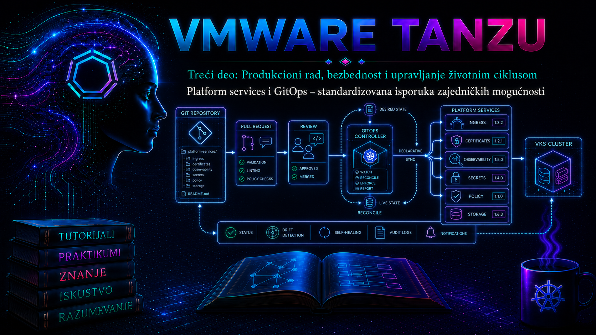

VMware & Tanzu

Od paketa do platformske usluge
Prethodne lekcije razdvojile su poverenje prema container registry-ju od upravljanja verzionisanim paketima. Ova lekcija taj mehanizam postavlja u širi operativni model: platform service je zajednička mogućnost koju platformski tim nudi većem broju klastera, namespace-ova ili aplikacionih timova pod poznatim uslovima. To može biti Ingress kontroler, DNS automatizacija, izdavanje sertifikata, prikupljanje logova i metrika, policy engine, secret integracija, backup agent ili GitOps kontroler. Paket je format isporuke; platformska usluga obuhvata i vlasništvo, bezbednosne granice, konfiguracioni ugovor, SLO, nadzor, lifecycle i postupak oporavka.
GitOps je operativni obrazac u kome je deklarativni željeni state verzionisan u Git-u, a kontroler ga periodično ili događajem preuzima, poredi sa stvarnim stanjem i usklađuje. Git nije samo mesto na kome se čuva YAML, niti je GitOps naziv za skriptu koja sa administratorske stanice izvršava kubectl apply. Ključna razlika je kontinuirani reconciliation: kontroler u klasteru ima poznat identitet, prijavljuje status poslednje posmatrane revizije i ponavlja pokušaj kada prolazna zavisnost nije dostupna.
U VMware Tanzu i VMware Cloud Foundation okruženjima konkretne mogućnosti zavise od porodice proizvoda i verzije. VKS standard packages i Carvel kapp-controller koriste resurse kao što su PackageRepository, PackageInstall i izvedeni App. Flux koristi skup kontrolera i resurse GitRepository, OCIRepository, Kustomization i HelmRelease. Argo CD koristi Application i AppProject, a u određenim VCF izdanjima može biti dostupan i kao Broadcom-ov Supervisor Service. Tanzu Application Platform ima sopstvene profile i supply-chain mogućnosti. Prisustvo jednog proizvoda u Broadcom portfoliju nije dokaz da je uključen, licenciran ili podržan u konkretnom Supervisor/VKS okruženju; pre dizajna treba proveriti product interoperability matrix, release notes, entitlement i dokumentaciju tačne verzije.
Arhitektura standardizovane isporuke
| Sloj | Odgovornost | Dokaz ispravnosti | Tipičan vlasnik |
|---|---|---|---|
| Izvor | Git ili OCI artefakt, nepromenljiva revizija, potpis i istorija promene | Commit SHA ili digest, verifikovan potpis i dostupna revizija | Platform engineering |
| Distribucija | Repository, registry, proxy, CA lanac i kredencijali samo za čitanje | Kontroler preuzima artefakt bez TLS i auth greške | Platforma i bezbednost |
| Reconciliation | Renderovanje, validacija, redosled, apply, health check, retry i prune | Ready=True, posmatrana revizija i uspešan poslednji reconcile | Platform operator |
| Runtime | Workload resursi, mreža, storage, sertifikati i zavisnosti | Funkcionalni test, SLI/SLO, događaji i metrike | Service owner |
| Governance | RBAC, policy, odobrenje, audit, segregacija dužnosti i rollback | Audit trag povezuje zahtev, reviziju, odobrenje i rezultat | Platforma, security i change management |
Tok promene počinje pull request-om, a ne direktnom izmenom klastera. CI proverava sintaksu, schema-u, policy pravila, testove i poreklo artefakta; odobrena promena ulazi u zaštićenu granu. Source kontroler zatim preuzima tačno određenu reviziju, deployment kontroler izračunava razliku, primenjuje dozvoljenu promenu i proverava zdravlje. Status se vraća kroz Kubernetes Conditions, događaje, metrike i obaveštenja. Git zapisuje nameru i istoriju, Kubernetes audit beleži ko je pozvao API, a controller log objašnjava izvršenje. Tek korelacija ta tri izvora daje potpun dokaz.
Za više klastera biraju se dva osnovna modela. U pull modelu svaki klaster ima lokalni agent sa minimalno potrebnim pravima i sam preuzima konfiguraciju; kvar centralnog UI-ja zato ne mora prekinuti postojeći runtime, ali kompromitovanje repozitorijuma ima širok blast radius. U centralnom modelu jedan kontrolni sistem upravlja udaljenim klasterima; pregled je jednostavniji, ali su credentials i mrežna dostupnost centralne komponente kritične zavisnosti. Za platformske usluge je često bezbedniji hijerarhijski model: mali bootstrap sloj uspostavlja kontrolere i guardrail-e, platform repository isporučuje zajedničke servise, a timski repository-ji rade samo unutar odobrenih namespace granica.
Šta pripada platformskom katalogu
U katalog se ne uvodi komponenta samo zato što može da se instalira Helm chart-om ili paketom. Kandidat mora imati poznatu ciljnu grupu, podržanu verziju Kubernetes-a, resource footprint, mrežne i storage zavisnosti, politiku nadogradnje, backup obim, vlasnika i postupak eskalacije. Posebno treba razlikovati cluster-scoped servis, koji kreira CRD-ove, ClusterRole ili webhook konfiguracije, od namespace-scoped dodatka. Cluster-scoped servis ima veći blast radius i ne treba ga dati timskom kontroleru samo zato što je manifest smešten u timski Git repository.
| Odluka | Preporučena produkciona praksa | Rizik pogrešne odluke |
|---|---|---|
| Verzija | Pinovanje na podržanu verziju ili nepromenljiv digest; kontrolisan update PR | Pokretni tag može bez odobrenja promeniti izvršni sadržaj |
| Konfiguracija | Podrazumevane vrednosti platforme i mali, dokumentovan skup timskih override-a | Neograničeni override-i stvaraju neodržive varijante |
| CRD lifecycle | Poseban plan kompatibilnosti, migracije i backup-a custom resursa | Rollback kontrolera ne mora vratiti CRD schema-u niti konvertovati podatke unazad |
| Prune | Uključiti tek uz jasne ownership oznake, zaštitu kritičnih resursa i probu u nižem okruženju | Brisanje iz Git-a može automatski obrisati runtime resurs |
| Secrets | Šifrovani Git sadržaj ili referenca ka spoljašnjem secret sistemu; kratkoživeći tokeni | Base64 u Kubernetes Secret-u nije enkripcija i ne sme se smatrati bezbednim Git sadržajem |
| Dostupnost | Više replika gde kontroler to podržava, PDB, anti-affinity i monitoring queue/reconcile metrika | Nedostupan kontroler zaustavlja nove promene i samoispravljanje, iako postojeći workload može nastaviti rad |
Repozitorijumi, okruženja i promotion
Repository struktura treba da pokaže vlasništvo i pravac promocije. Base konfiguracija sadrži zajednički intent, a environment overlay samo razlike koje zaista pripadaju okruženju. Direktno kopiranje celog manifesta između direktorijuma stvara konfiguracioni drift u samom Git-u. Produkcija ne treba automatski da prati razvojnu granu; ista verifikovana revizija ili digest promoviše se kroz dev, test i production uz odvojene odobrene izmene environment reference.
platform-config/
├── services/
│ └── team-info/
│ ├── base/
│ └── overlays/
│ ├── lab/
│ └── production/
├── clusters/
│ ├── vks-lab-01/
│ └── vks-prod-01/
└── policies/
├── validation/
└── exceptions/Branch-per-environment model je moguć, ali otežava uvid u razliku i dugovečne merge tokove. Directory-per-environment model olakšava poređenje u jednoj grani, dok repository-per-environment povećava izolaciju i administraciju pristupa. Izbor nije religijsko pitanje: organizacija bira prema segregaciji dužnosti, broju klastera, regulatornim zahtevima i sposobnosti alata da ograniči source i destination. Bez obzira na model, commit potpis, branch protection, obavezni review, CODEOWNERS, status provere i zabrana force-push-a važniji su od estetskog rasporeda direktorijuma.
Bezbednosni model i lanac isporuke
GitOps kontroler je privilegovani automatizovani identitet. Njegov ServiceAccount ne treba automatski da bude cluster-admin. Prava se dele po kontroleru, namespace-u i vrsti resursa; Flux podržava izvršavanje reconciliation-a impersonacijom navedenog ServiceAccount-a, Argo CD ograničava projekte kroz source, destination i resource allow/deny liste, dok Carvel PackageInstall eksplicitno navodi ServiceAccount kojim izvedeni App menja resurse. Ako paket zahteva cluster-scoped prava, to mora biti dokumentovana platformska odluka, a ne skrivena posledica širokog RoleBinding-a.
Supply-chain kontrola obuhvata više od Git review-a: verifikaciju potpisanog commit-a ili taga, TLS poverenje, pinovan OCI digest, SBOM i vulnerability politiku, proveru potpisa artefakta i admission policy. Kontroler treba da čita repository koristeći deploy key ili token najmanjeg obima, bez prava pisanja ako image automation nije namerno uveden. Kredencijali se rotiraju, pristup se auditira, a egress se ograničava na potrebne Git, OCI i notification endpoint-e.
Git ne sme sadržati plaintext lozinke, privatne ključeve ili kubeconfig. Prihvatljivi obrasci su šifrovanje za GitOps uz odvojeno upravljanje ključem, operator koji iz external secret store-a materijalizuje Secret ili CSI integracija koja tajnu montira u runtime. Recovery plan mora obuhvatiti i ključ za dekripciju; repository bez tog ključa nije dovoljan backup.
Reconciliation, drift, zavisnosti i brisanje
Drift je razlika između željenog i stvarnog stanja. Njegov uzrok može biti ručna intervencija, drugi kontroler, admission mutacija, podrazumevana vrednost API servera ili nedeterminističko renderovanje. Nije svaki prikaz razlike incident. Pre korekcije treba utvrditi koje polje ima kog field manager-a i da li platforma namerno mutira objekat. Beskonačna petlja dva kontrolera koji upisuju različite vrednosti proizvodi opterećenje API servera i nestabilnu uslugu; trajna mera je jednoznačno vlasništvo nad poljem, a ne ubrzavanje intervala reconcile-a.
Zavisnosti se izražavaju eksplicitno kada alat to podržava: CRD pre custom resursa, operator pre njegove instance, secret provider pre reference i platform service pre aplikacije koja ga koristi. Status Applied ne mora značiti Ready; validacija mora obuhvatiti health check i funkcionalni probe. Kraći interval brže ispravlja drift, ali povećava Git/OCI i API opterećenje. Webhook može ubrzati reakciju, ali periodični reconcile ostaje zaštita od izgubljenog događaja.
Upozorenje: automatski prune pretvara brisanje ili pogrešno premeštanje fajla u state-changing operaciju nad klasterom. Za StatefulSet, PVC, CRD ili namespace posledica može uključiti gubitak podataka. U produkciji se koriste review, zaštitne policy, finalizer-i kada su semantički opravdani, backup i probni restore. Isključivanje prune-a smanjuje rizik od automatskog brisanja, ali ostavlja orphan resurse; zato nije zamena za inventar i vlasništvo.
Observability i operativni dokazi
GitOps dashboard je pomoć, ne jedini izvor istine. Administrator proverava status CR-a, Conditions, poslednju primenjenu reviziju, događaje, controller logove i funkcionalno stanje usluge. Osnovne metrike su trajanje i broj reconciliation-a, greške po razlogu, starost poslednjeg uspeha, work queue dubina, API throttling, source fetch greške i dostupnost webhook/notification komponente. Alarm treba da razlikuje kratki retry od trajnog neuspeha i da sadrži klaster, objekat, namespace, reviziju i runbook.
# READ-ONLY: izvršava platform operator sa pristupom ciljnom klasteru.
kubectl get packagerepositories,packageinstalls,apps -A
kubectl get gitrepositories,kustomizations,helmreleases -A
kubectl get applications.argoproj.io -A
# Generička korelacija objekta: status, Conditions i događaji.
kubectl describe -n platform-system <vrsta> <naziv>
kubectl get events -n platform-system \
--sort-by=.metadata.creationTimestampPrva tri upita mogu vratiti grešku the server doesn't have a resource type kada odgovarajući kontroler/CRD nije instaliran; to nije dokaz kvara druge implementacije. Pre čitanja logova identifikuje se stvarni Deployment i label selektor kontrolera. Vreme se ograničava na incident kako se ne bi pomešale stare i nove greške:
# READ-ONLY primer; prilagoditi namespace i label stvarnoj instalaciji.
kubectl get deploy,pod -n gitops-system --show-labels
kubectl logs -n gitops-system deployment/source-controller \
--since=20m --timestamps=true
kubectl logs -n gitops-system deployment/kustomize-controller \
--since=20m --timestamps=trueZa Carvel se korelišu PackageInstall, izvedeni App i logovi kapp-controller; za Flux source i apply kontroler; za Argo CD application-controller, repo-server i API/server komponenta. Traže se ista revizija, resource key, vreme i razlog. Log sa auth greškom upućuje na repository credential; render greška na sintaksu ili values; forbidden na RBAC; dry-run greška „no matches for kind” na odsutan CRD ili pogrešan redosled; health timeout na runtime zavisnost, probe, kapacitet ili mrežu.
Integrisani praktikum: platformska usluga kroz Flux reconciliation
Cilj i kontekst. U laboratorijskom VKS klasteru platformski tim isporučuje bezbedan, namespace-scoped servis team-info iz Git repozitorijuma. Vežba dokazuje source fetch, render, apply, health check, drift korekciju, incident zbog neispravne revizije i Git rollback. Flux je izabran kao jasan referentni GitOps primer; ako organizacija standardizuje Carvel ili Argo CD, isti kontrolni principi se mapiraju na njihove CR-ove, ali manifesti nisu međusobno zamenljivi.
Topologija i preduslovi. Potrebni su neprodukcioni VKS klaster, poseban namespace platform-system, instaliran i podržan Flux, Git repozitorijum dostupan kontroleru, lokalni kubectl, git i opciono flux CLI kompatibilan sa instaliranim kontrolerima. Korisnik koji priprema namespace i RBAC ima platformska prava; dnevni reconciliation koristi ograničeni ServiceAccount. Privatni repository zahteva unapred kreiran Secret prema Flux dokumentaciji. Komande za pregled su read-only; kubectl apply, Git push, suspend/resume i brisanje menjaju stanje.
Rizik. Vežba ne koristi PVC, CRD ni cluster-scoped workload. Ipak, prune: true može obrisati resurse koje dati Kustomization poseduje. Ne usmeravati ga ka zajedničkom produkcionom namespace-u. Pre početka zabeležiti trenutni kontekst:
# READ-ONLY
kubectl config current-context
kubectl cluster-info
flux check
kubectl get ns platform-system team-aOčekuje se tačan laboratorijski kontekst i uspešan flux check. Ako namespace-i ne postoje, ovlašćeni platform administrator ih kreira i zatim vezuje ograničeni ServiceAccount:
apiVersion: v1
kind: Namespace
metadata:
name: team-a
---
apiVersion: v1
kind: ServiceAccount
metadata:
name: platform-reconciler
namespace: team-a
---
apiVersion: rbac.authorization.k8s.io/v1
kind: Role
metadata:
name: platform-service-manager
namespace: team-a
rules:
- apiGroups: [""]
resources: ["configmaps", "services"]
verbs: ["get", "list", "watch", "create", "update", "patch", "delete"]
- apiGroups: ["apps"]
resources: ["deployments"]
verbs: ["get", "list", "watch", "create", "update", "patch", "delete"]
---
apiVersion: rbac.authorization.k8s.io/v1
kind: RoleBinding
metadata:
name: platform-reconciler
namespace: team-a
subjects:
- kind: ServiceAccount
name: platform-reconciler
namespace: team-a
roleRef:
apiGroup: rbac.authorization.k8s.io
kind: Role
name: platform-service-managerManifest se čuva u odobrenom bootstrap repozitorijumu i primenjuje kroz postojeći proces. Za laboratoriju ga operator može primeniti komandnom kubectl apply -f rbac.yaml. Potvrda najmanjeg skupa prava je read-only impersonation test:
kubectl auth can-i create deployments.apps -n team-a \
--as=system:serviceaccount:team-a:platform-reconciler
kubectl auth can-i create clusterroles \
--as=system:serviceaccount:team-a:platform-reconcilerOčekivano je yes, zatim no. Drugi rezultat potvrđuje da timski reconciler nema cluster-scoped administraciju.
Vežba 1: deklaracija izvora i željenog stanja
U Git repozitorijumu, na putanji services/team-info, čuvaju se Deployment i Service. Image se u realnoj platformi pin-uje na odobren digest; laboratorijski primer koristi placeholder koji administrator mora zameniti stvarnim internim image-om pre commit-a.
apiVersion: apps/v1
kind: Deployment
metadata:
name: team-info
namespace: team-a
labels:
app.kubernetes.io/name: team-info
app.kubernetes.io/managed-by: flux
spec:
replicas: 2
selector:
matchLabels:
app.kubernetes.io/name: team-info
template:
metadata:
labels:
app.kubernetes.io/name: team-info
spec:
containers:
- name: web
image: registry.example.invalid/platform/team-info@sha256:REPLACE_WITH_APPROVED_DIGEST
ports:
- name: http
containerPort: 8080
readinessProbe:
httpGet:
path: /ready
port: http
periodSeconds: 5
resources:
requests:
cpu: 50m
memory: 64Mi
limits:
cpu: 250m
memory: 128Mi
---
apiVersion: v1
kind: Service
metadata:
name: team-info
namespace: team-a
spec:
selector:
app.kubernetes.io/name: team-info
ports:
- name: http
port: 80
targetPort: httpPre push-a CI mora odbiti placeholder digest, validirati schema-u i proveriti policy. Nakon commit-a beleži se SHA. Sledeći Flux objekti pretpostavljaju da bootstrap proces već obezbeđuje repository credential i da URL pripada laboratorijskom repozitorijumu:
apiVersion: source.toolkit.fluxcd.io/v1
kind: GitRepository
metadata:
name: platform-config
namespace: platform-system
spec:
interval: 1m
url: ssh://git@git.example.invalid/platform/platform-config.git
ref:
branch: main
secretRef:
name: platform-config-readonly
---
apiVersion: kustomize.toolkit.fluxcd.io/v1
kind: Kustomization
metadata:
name: team-info
namespace: platform-system
spec:
interval: 5m
retryInterval: 1m
timeout: 3m
path: ./services/team-info
prune: true
wait: true
sourceRef:
kind: GitRepository
name: platform-config
targetNamespace: team-a
serviceAccountName: platform-reconciler
healthChecks:
- apiVersion: apps/v1
kind: Deployment
name: team-info
namespace: team-aState-changing korak: objekte primeniti postojećim bootstrap procesom; samo u izolovanoj laboratoriji dozvoljeno je kubectl apply -f flux-team-info.yaml. targetNamespace ne prepisuje eksplicitni namespace u svakom mogućem manifestu, pa CI policy mora odbiti nedozvoljena odredišta.
Vežba 2: validacija od revizije do funkcije
# READ-ONLY status i dokaz revizije
kubectl get gitrepository -n platform-system platform-config -o wide
kubectl get kustomization -n platform-system team-info -o wide
flux get sources git -n platform-system
flux get kustomizations -n platform-system
kubectl rollout status deployment/team-info -n team-a --timeout=180s
kubectl get pod,service -n team-a -l app.kubernetes.io/name=team-info -o wideKriterijum nije samo postojanje objekta. GitRepository i Kustomization treba da imaju Ready=True, a status da pokaže očekivanu reviziju. Deployment mora imati dve available replike. Funkcionalni test se radi privremenim port-forward-om sa administratorske stanice, bez trajnog izlaganja servisa:
# Privremena lokalna sesija; prekida se sa Ctrl+C.
kubectl port-forward -n team-a service/team-info 18080:80
# U drugom terminalu:
curl --fail --show-error http://127.0.0.1:18080/readyOčekuje se uspešan HTTP odgovor. Ako je GitOps status zelen, a probe neuspešan, problem je u health kriterijumu ili aplikaciji; ako je source neuspešan, prvo se proveravaju DNS, ruta, CA i read-only credential; ako apply vraća forbidden, poredi se traženi resurs sa Role pravilima umesto dodeljivanja cluster-admin.
Vežba 3: bezbedna demonstracija drift-a
U laboratoriji se replica count ručno menja sa 2 na 1. To je state-changing, ali nije destruktivno za podatke. Pre testa beleži se trenutna revizija i stanje:
# LAB STATE-CHANGING: namerno pravi drift.
kubectl scale deployment/team-info -n team-a --replicas=1
# READ-ONLY: pratiti vraćanje na Git vrednost.
kubectl get deployment/team-info -n team-a --watchReconciler treba da vrati dve replike najkasnije posle sledećeg intervala. Opciono se, bez menjanja manifesta, može zatražiti trenutni reconcile:
# STATE-CHANGING prema statusu kontrolera; ne menja Git intent.
flux reconcile kustomization team-info -n platform-system --with-sourceUspeh se potvrđuje sa dve available replike, događajem/reconcile statusom i nepromenjenim Git SHA. Ako se ručna vrednost ne vraća, proveravaju se suspend stanje, poslednja posmatrana revizija, ownership objekta i controller log. Ako vrednost osciluje, traži se drugi kontroler ili HPA koji upravlja istim poljem.
Vežba 4: incident, dijagnostika i Git rollback
Simulacija. U posebnom laboratorijskom branch-u readiness putanja se promeni u /does-not-exist, prolazi review i spaja u lab konfiguraciju. Ne koristiti production branch. Očekivani simptom je da je novi ReplicaSet kreiran, ali Deployment ne postaje zdrav i Kustomization završava health timeout-om.
- Obim i posledica: proveriti da li je pogođen samo
team-info, da li stari podovi još služe saobraćaj i da li je source uspešno preuzeo novu reviziju. - Dokazi: sačuvati commit SHA, Conditions, Deployment status, događaje, probe rezultat i controller log za isti vremenski prozor.
- Hipoteza: razlikovati uspešan apply sa neuspešnim health check-om od auth, render, RBAC ili scheduling greške.
- Korekcija: revertovati problematični Git commit novim, pregledanim commit-om. Ne resetovati zaštićenu istoriju i ne popravljati samo live objekat.
- Oporavak: sačekati ili eksplicitno pokrenuti reconcile, potvrditi prethodni ispravan spec i ponoviti funkcionalni test.
# READ-ONLY prikupljanje dokaza
kubectl describe kustomization -n platform-system team-info
kubectl get deployment,replicaset,pod -n team-a \
-l app.kubernetes.io/name=team-info -o wide
kubectl describe deployment/team-info -n team-a
kubectl get events -n team-a --sort-by=.metadata.creationTimestamp
# Na radnoj kopiji repozitorijuma: STATE-CHANGING promena Git istorije novim commit-om.
git log --oneline -5
git revert <sha-neispravnog-commit-a>
git push origin main
# STATE-CHANGING reconcile; zatim READ-ONLY validacija.
flux reconcile kustomization team-info -n platform-system --with-source
kubectl rollout status deployment/team-info -n team-a --timeout=180s
flux get kustomizations -n platform-systemNeposredni uzrok je nepostojeća probe putanja; osnovni uzrok je nedovoljna pre-production validacija ugovora aplikacije; privremeno zaobilazno rešenje moglo bi biti suspendovanje daljeg reconcile-a samo ako nekontrolisano ponavljanje pogoršava incident, ali tada nestaje drift zaštita; trajna mera je CI/integration test stvarne readiness putanje i promotion iste verifikovane revizije. Ručni kubectl edit nije trajan oporavak jer će ga kontroler vratiti.
Vežba 5: kontrolisano suspendovanje i povratak laboratorije
Suspend se koristi kada se mora zaustaviti izvršavanje novih promena radi istrage; postojeći resursi ostaju u klasteru, ali više nisu automatski korigovani. Operacija mora imati ticket, vlasnika, rok i alarm da ne ostane zaboravljena.
# STATE-CHANGING: privremeno zaustavlja reconciliation.
flux suspend kustomization team-info -n platform-system
flux get kustomizations -n platform-system
# STATE-CHANGING: vraća kontrolu; zatim čeka rezultat.
flux resume kustomization team-info -n platform-system
flux reconcile kustomization team-info -n platform-system --with-sourceZa potpuno čišćenje laboratorije prvo se proverava inventory koji objekat poseduje. Brisanje Kustomization uz prune/finalization ponašanje zavisi od podešavanja i verzije; zato se ne izvršava naslepo. Bezbedan završetak je revert commit-a kojim je servis dodat, review očekivanog diff-a, pa reconcile i potvrda da su uklonjeni samo resursi sa ownership-om ove vežbe. Namespace i bootstrap RBAC uklanjaju se tek kada se potvrdi da ih ništa drugo ne koristi.
Troubleshooting matrica
| Simptom | Prva potvrda | Verovatan neposredni uzrok | Bezbedna trajna mera |
|---|---|---|---|
| Source nije Ready | Condition razlog i source-controller log | DNS, TLS/CA, auth, branch ili rate limit | Ispraviti poverenje ili read-only credential; ne isključivati TLS proveru |
| Build/render neuspešan | Revizija i puna validation poruka | YAML, values, Kustomize ili API schema greška | Revert i uvesti isti build/schema test u CI |
| Apply forbidden | ServiceAccount impersonation i audit događaj | Nedovoljno ili pogrešno vezano RBAC pravo | Dodati samo neophodan verb/resource u odgovarajućem scope-u |
| No matches for kind | kubectl api-resources i dependency status | CRD nije instaliran ili verzija API-ja nije podržana | Ispraviti redosled i compatibility; ne primenjivati nasumičan CRD sa interneta |
| Applied, ali nije healthy | Deployment Conditions, events, probe i zavisnosti | Image pull, scheduling, config, mreža, storage ili probe | Korigovati Git intent ili zavisnost i funkcionalno validirati |
| Stalni diff | Managed fields i ponovljene promene istog polja | Admission default/mutation ili konkurentni kontroler | Definisati vlasništvo polja ili dokumentovano ignore pravilo uskog opsega |
| Obrisan servis | Git diff, audit, inventory i prune događaj | Pogrešan merge/path ili preširoko ownership pravilo | Revert, restore podataka po potrebi, zatim zaštitne policy i review |
Administratorske prakse
- Voditi katalog sa vlasnikom, podržanim verzijama, zavisnostima, SLO-om, runbook-om, backup/restore obimom i datumom prestanka podrške svake usluge.
- Razdvojiti bootstrap, platform i aplikacioni sloj; aplikacionom timu ne davati implicitno pravo nad CRD-ovima, webhook-ovima i cluster RBAC-om.
- Promovisati nepromenljiv artefakt, a ne ponovo graditi „istu” verziju za produkciju; povezati commit, image digest, SBOM, potpis i deployment status.
- Zaštititi Git grane, zahtevati nezavisan review za privilegovane promene i testirati policy, schema-u, render i health ugovor pre merge-a.
- Ne čuvati plaintext tajne u Git-u; testirati rotaciju i disaster recovery ključeva i external secret zavisnosti.
- Alarmirati na starost poslednjeg uspešnog reconcile-a i source/apply greške, ne samo na dostupnost controller podova.
- Ručnu hitnu intervenciju označiti, vremenski ograničiti i odmah preneti nazad u Git; u suprotnom će je kontroler poništiti ili će postati nedokumentovan drift.
- Pre upgrade-a proveriti Kubernetes, package/controller, CRD i backend compatibility; napraviti backup relevantnih custom resursa i dokazati rollback ili forward-fix u staging-u.
- Prune uvoditi postepeno, sa jasnim inventory/ownership dokazom; za stateful i cluster-scoped resurse zahtevati dodatnu zaštitu i test restore-a.
Završna kontrolna tačka
Administrator je završio lekciju kada može dokazima da:
- razlikuje paket, platformsku uslugu, CI pipeline i GitOps reconciliation;
- izabere odgovarajući Carvel, Flux ili Argo CD obrazac tek nakon provere podrške, verzije i licence;
- projektuje repository, promotion i ownership model za više klastera i okruženja;
- ograniči kontroler namespace-scoped ServiceAccount-om i potvrdi dozvole sa
kubectl auth can-i; - poveže Git commit/digest sa source statusom, primenjenom revizijom, Kubernetes događajima i funkcionalnim testom;
- objasni posledice drift korekcije, suspendovanja i prune-a i sprovede Git revert bez brisanja istorije;
- razdvoji simptom, neposredni i osnovni uzrok GitOps incidenta, primeni najmanje rizičnu korekciju i dokumentuje oporavak;
- napravi lifecycle, observability, backup i incident-response plan za zajedničku platformsku uslugu.
Zaključak
Standardizovana platforma ne nastaje instalacijom velikog broja dodataka, već pretvaranjem pažljivo izabranih komponenti u pouzdane usluge sa jasnim ugovorom i vlasništvom. GitOps omogućava da namera bude pregledana, verzionisana i kontinuirano sprovođena, ali istovremeno uvećava domet pogrešnog commit-a i privilegovanog kontrolera. Zbog toga su nepromenljivi artefakti, najmanje privilegije, eksplicitne zavisnosti, kontrolisan prune, merljiv reconciliation i proban oporavak deo iste arhitekture.
Odgovoran Tanzu administrator ne zaključuje da je promena uspešna zato što je merge završen ili CR prikazuje Ready=True. On dokazuje da je očekivana revizija stigla do pravog klastera, da je usluga funkcionalna, da su bezbednosne granice očuvane i da postoji proverljiv povratak. Tako platform services postaju stabilan proizvod za timove, a GitOps kontrolisana operativna disciplina umesto automatizovanog izvora drift-a i incidenata.